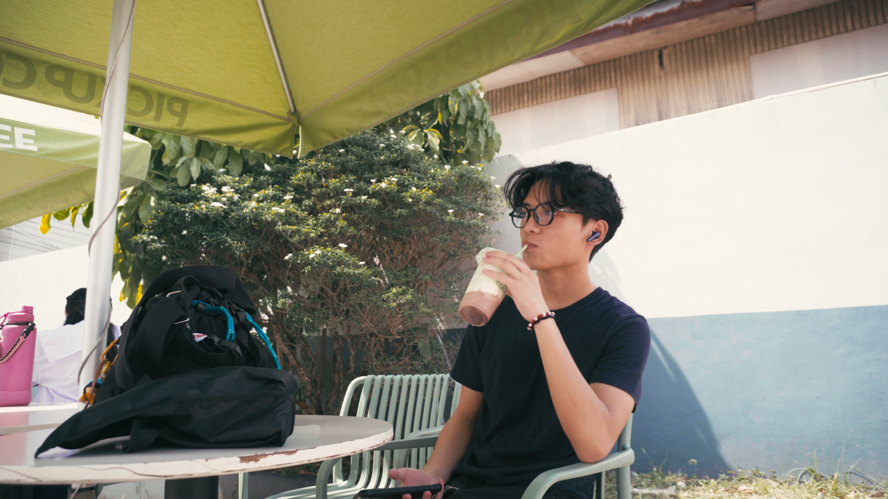
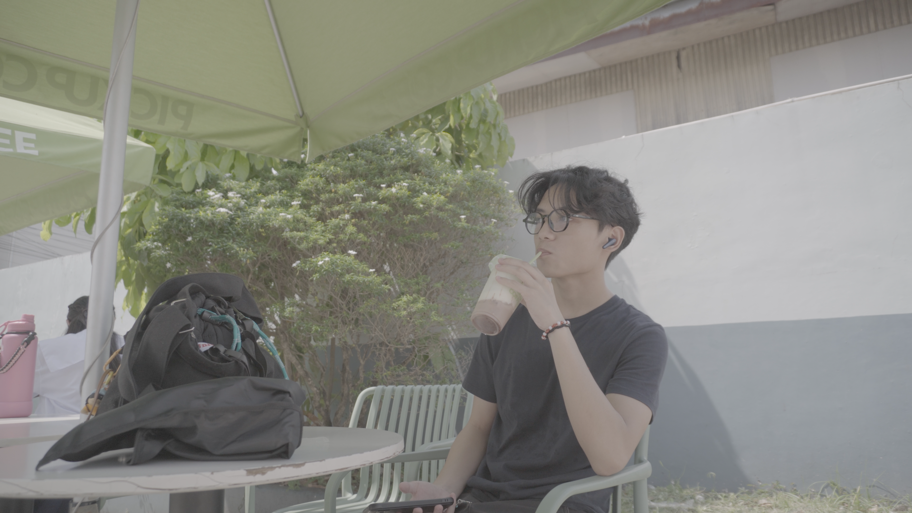
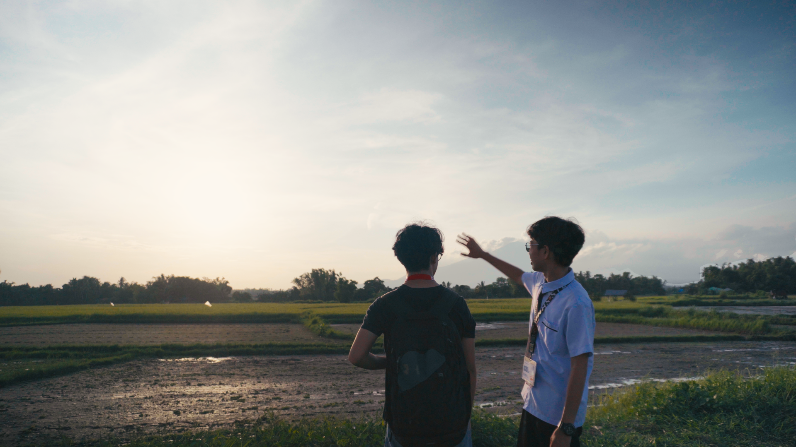
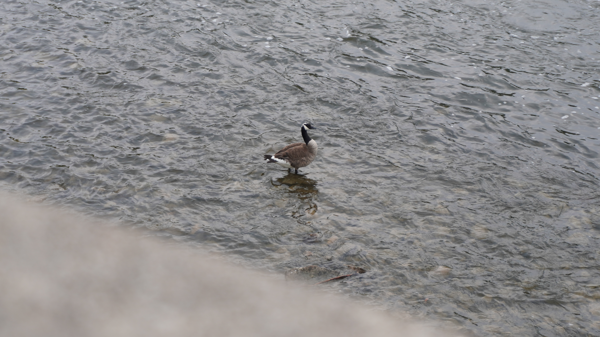

MY WORK
A selection of cinematic color grading projects.
01
LIFESTYLE
Coffee Shop
Sony ZV-E10 I • DaVinci Resolve • 2026A cinematic color grade focused on warm tones, soft contrast, and creating a cozy atmosphere.
 draggable="false"
draggable="false"

draggable="false"02
LANDSCAPE
Sunset
Sony ZV-E10 I • DaVinci Resolve • 2026A cinematic grade designed to enhance atmosphere, contrast, and visual storytelling.

draggable="false"
draggable="false"03
WILDLIFE
Riverside
Sony ZV-E10 I • DaVinci Resolve • 2025A cinematic wildlife color grade focused on warm highlights, subtle contrast, and creating a calm atmosphere through natural light.
